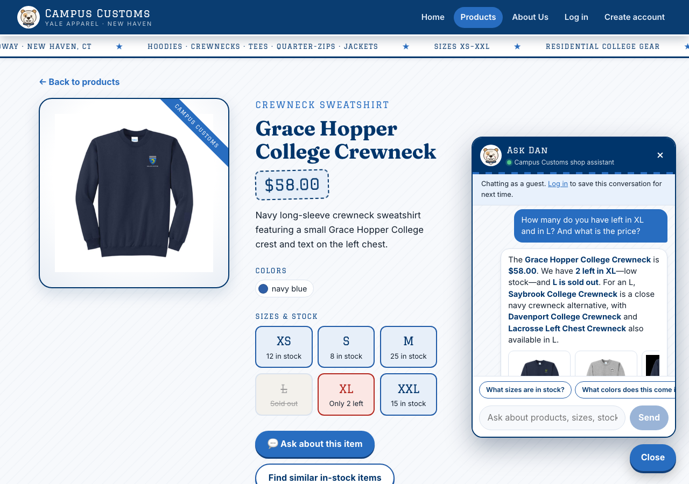
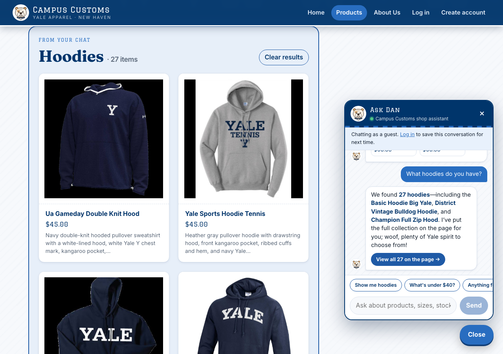
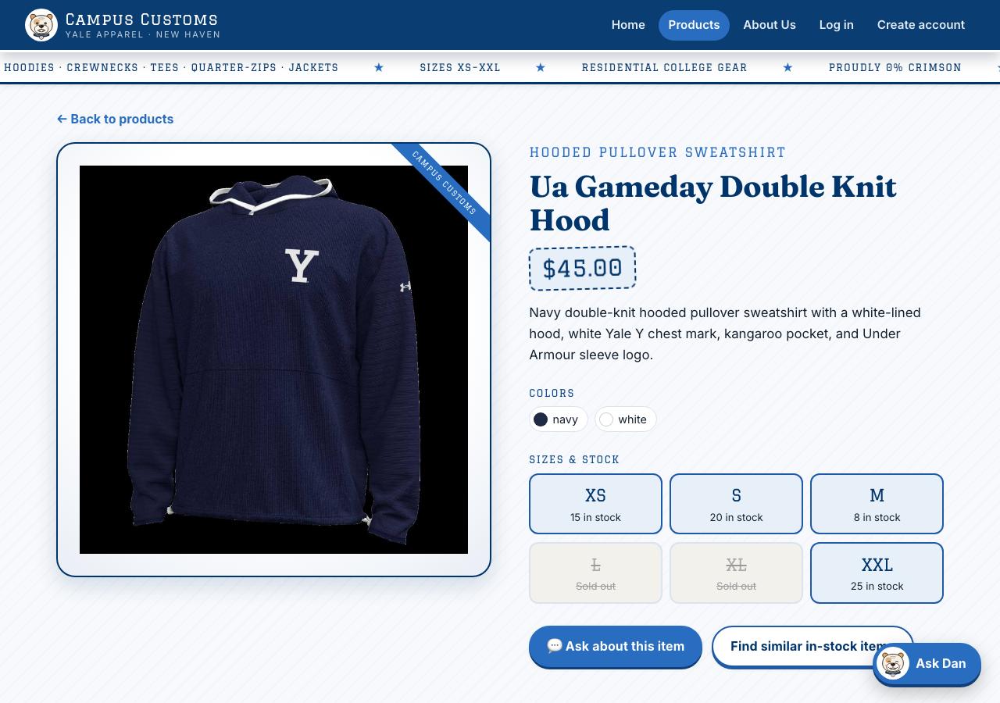
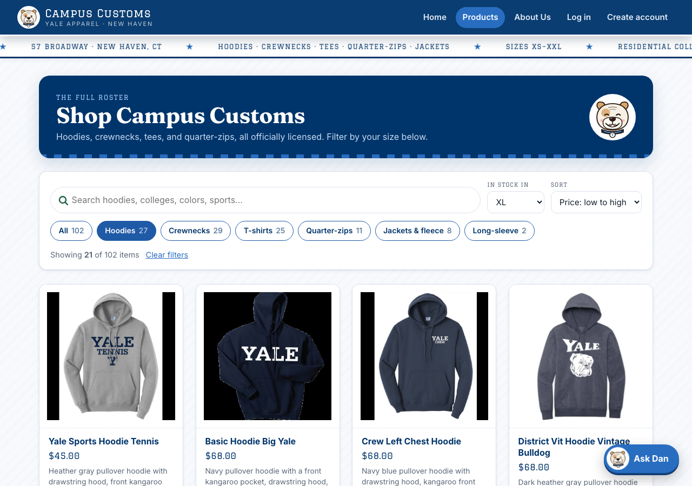

Each screenshot was taken from the running site in a fresh browser session, as a guest. Every number on screen was then checked against data/campus_customs.db.
1. Chat checks the inventory level of an item

How it was verified
- Server log for this turn:
check_stock(grace-hopper-college-crewneck, XL)→check_stock(…, L)→find_similar_products(…, size=L), so the numbers came from database lookups, not the model's memory. - SQL:
inventoryhas XS 12 · S 8 · M 25 · L 0 · XL 2 · XXL 15;catalogue.price= 58.0. - The suggested alternatives are in stock in L: Saybrook 2, Davenport 12, Lacrosse Left Chest 20.
- The price fact-check guard (Problem 9) allows only prices from this turn's lookups, and $58.00 passed.
2. Dynamic search-result cards after a category question


How it was verified
- Server log:
search_products(garment_type="hoodie", limit=48), thenpage_resultswith 27 product ids. - The set of card ids on the page equals
SELECT product_id FROM catalogue WHERE lower(garment_type) LIKE '%hood%'(27 rows). - Clicked the first card and landed on
/products/ua-gameday-double-knit-hood.
3. Usability feature (Problem 9): search, filter, and sort on Products

?category=hoodie&size=XL&sort=price-asc) so the view can be shared.
How it was verified
- The 21 product ids on screen equal the SQL set of hoodies with
inventory.size = 'XL' AND quantity > 0. - Prices run in ascending order from $45.00 to $88.00. The chip counts (Hoodies 27, Crewnecks 29, T-shirts 25, …) match the catalogue.